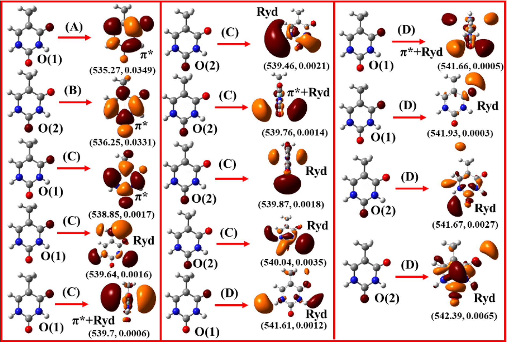

Core-Level Spectroscopy with Coupled Cluster Methods¶
The equation of motion coupled cluster method and its similarity transformed version provides an easy way to directly calculate core-ionization and core-excitation energies. The core-level spectroscopy with EOM-CCSD is only available for closed shell systems.
Core-Ionization¶
One can obtain core-ionized states if one calculates a large no of roots. The ORCA implementation of IP-EOM-CCSD, however, allows one to directly target the ionization from the core-orbitals. A typical IP-EOM-CCSD input file for the acetic acid will look like
8 structure (0 1) C -6.7624010562 0.1328615492 0.0389382700 C -5.3564667033 0.2819965475 -0.5188248498 H -6.9983743824 1.0019615710 0.6510029634 H -7.4924880320 0.0542210905 -0.7741766747 H -6.8380664832 -0.7720291637 0.6519904379 O -4.9303467983 -0.7518088469 -1.3223158759 H -5.6257914271 -1.4265892921 -1.4015111180 O -4.6208051175 1.2132365445 -0.3081931529
!IP-EOM-CCSD ExtremeSCF cc-pvdz
!NoFrozencore
%maxcore 5000
%mdci
nroots 4 # no of roots
FollowCIS true # Follow the initial guess orbital
DoCVS true # Core valence separation
# (currently both the option needs to be true)
DoCore true # Directly target the core
CoreOrb[0]=0 # The MO from which it will start counting
maxiter 500 # no of iteration, generally requires larger no of roots
end
*xyz 0 1
C -6.7624010562 0.1328615492 0.0389382700
C -5.3564667033 0.2819965475 -0.5188248498
H -6.9983743824 1.0019615710 0.6510029634
H -7.4924880320 0.0542210905 -0.7741766747
H -6.8380664832 -0.7720291637 0.6519904379
O -4.9303467983 -0.7518088469 -1.3223158759
H -5.6257914271 -1.4265892921 -1.4015111180
O -4.6208051175 1.2132365445 -0.3081931529
*
The output of it will be
----------------------
EOM-CCSD RESULTS (RHS)
----------------------
IROOT= 1: 19.999934 au 544.226 eV 4389478.1 cm**-1
Amplitude Excitation
0.672786 0 -> x
Percentage singles character= 82.70
IROOT= 2: 19.944006 au 542.704 eV 4377203.3 cm**-1
Amplitude Excitation
0.672143 1 -> x
Percentage singles character= 82.41
IROOT= 3: 10.962172 au 298.296 eV 2405918.7 cm**-1
Amplitude Excitation
0.669804 2 -> x
Percentage singles character= 81.37
IROOT= 4: 10.826519 au 294.605 eV 2376146.3 cm**-1
Amplitude Excitation
0.670634 3 -> x
Percentage singles character= 81.74
The option 'DoCore true' together with 'DoCVS true' and 'CoreOrb[0]=0' is enough to enable the calculation for core ionizations in IP-EOM-CCSD. The option 'CoreOrb[0]=0' indicates that we will look for core excitations arising from the orbital 0 up to the HOMO, which correspond to the oxygen K-shell. We can also directly access the carbon K-edge by starting from the orbital 2 instead. For this, we use 'CoreOrb[0]=2'
8 structure (0 1) C -6.7624010562 0.1328615492 0.0389382700 C -5.3564667033 0.2819965475 -0.5188248498 H -6.9983743824 1.0019615710 0.6510029634 H -7.4924880320 0.0542210905 -0.7741766747 H -6.8380664832 -0.7720291637 0.6519904379 O -4.9303467983 -0.7518088469 -1.3223158759 H -5.6257914271 -1.4265892921 -1.4015111180 O -4.6208051175 1.2132365445 -0.3081931529
!IP-EOM-CCSD ExtremeSCF cc-pvdz
!NoFrozencore
%maxcore 5000
%mdci
nroots 2 # no of roots
FollowCIS true # Follow the initial guess orbital
DoCVS true # Core valence separation
# (currently both the option needs to be true)
DoCore true # Directly target the core
CoreOrb[0]=2 # The MO from which it will start counting
maxiter 500 # no of iteration, generally requires larger no of roots
end
*xyz 0 1
C -6.7624010562 0.1328615492 0.0389382700
C -5.3564667033 0.2819965475 -0.5188248498
H -6.9983743824 1.0019615710 0.6510029634
H -7.4924880320 0.0542210905 -0.7741766747
H -6.8380664832 -0.7720291637 0.6519904379
O -4.9303467983 -0.7518088469 -1.3223158759
H -5.6257914271 -1.4265892921 -1.4015111180
O -4.6208051175 1.2132365445 -0.3081931529
*
The output of it will be
----------------------
EOM-CCSD RESULTS (RHS)
----------------------
IROOT= 1: 10.962172 au 298.296 eV 2405918.7 cm**-1
Amplitude Excitation
0.669804 2 -> x
Percentage singles character= 81.37
IROOT= 2: 10.826519 au 294.605 eV 2376146.3 cm**-1
Amplitude Excitation
0.670634 3 -> x
Percentage singles character= 81.74
Now, the core-ionized states remains embedded in the high density of doubly ionized valence states that form the continuum. This leads to severe convergence problems. One easy way to overcome this is to use the core-valence separation approximation which is turned on by setting an upper limit to the possible core excitations. The orbitals from which the contributions are not neglected for the core-valence separation are set by 'CoreOrb[0]= initial,final'. It is generally a good idea to include all the core orbitals corresponding to a particular element if one is interested in the ionization from any of the core orbitals for the particular element. In the second example both the carbon core-orbitals are also included, which is equivalent to set 'CoreOrb[0] = 0,3'. A 'bt-PNO-IP-EOM-CCSD' input file for the same example will look like
8 structure (0 1) C -6.7624010562 0.1328615492 0.0389382700 C -5.3564667033 0.2819965475 -0.5188248498 H -6.9983743824 1.0019615710 0.6510029634 H -7.4924880320 0.0542210905 -0.7741766747 H -6.8380664832 -0.7720291637 0.6519904379 O -4.9303467983 -0.7518088469 -1.3223158759 H -5.6257914271 -1.4265892921 -1.4015111180 O -4.6208051175 1.2132365445 -0.3081931529
!bt-PNO-IP-EOM-CCSD ExtremeSCF cc-pvdz cc-pvdz/c
!NoFrozencore
%maxcore 5000
%mdci
nroots 4 # no of roots
FollowCIS true # Follow the initial guess orbital
DoCVS true # Core valence separation
# (currently both the option needs to be true)
DoCore true # Directly target the core
CoreOrb[0]=0,3 # The MO from which it will start counting
maxiter 500 # no of iteration, generally requires larger no of roots
end
*xyz 0 1
C -6.7624010562 0.1328615492 0.0389382700
C -5.3564667033 0.2819965475 -0.5188248498
H -6.9983743824 1.0019615710 0.6510029634
H -7.4924880320 0.0542210905 -0.7741766747
H -6.8380664832 -0.7720291637 0.6519904379
O -4.9303467983 -0.7518088469 -1.3223158759
H -5.6257914271 -1.4265892921 -1.4015111180
O -4.6208051175 1.2132365445 -0.3081931529
*
The output of it will be
----------------------
EOM-CCSD RESULTS (RHS)
----------------------
IROOT= 1: 19.999730 au 544.220 eV 4389433.3 cm**-1
Amplitude Excitation
0.672774 0 -> x
Percentage singles character= 82.69
IROOT= 2: 19.943800 au 542.698 eV 4377158.2 cm**-1
Amplitude Excitation
0.672139 1 -> x
Percentage singles character= 82.41
IROOT= 3: 10.962316 au 298.300 eV 2405950.3 cm**-1
Amplitude Excitation
0.669787 2 -> x
Percentage singles character= 81.36
IROOT= 4: 10.826562 au 294.606 eV 2376155.7 cm**-1
Amplitude Excitation
0.670612 3 -> x
Percentage singles character= 81.73
The results are in excellent agreement with the canonical one. A DLPNO variant for the same example will look like
8 structure (0 1) C -6.7624010562 0.1328615492 0.0389382700 C -5.3564667033 0.2819965475 -0.5188248498 H -6.9983743824 1.0019615710 0.6510029634 H -7.4924880320 0.0542210905 -0.7741766747 H -6.8380664832 -0.7720291637 0.6519904379 O -4.9303467983 -0.7518088469 -1.3223158759 H -5.6257914271 -1.4265892921 -1.4015111180 O -4.6208051175 1.2132365445 -0.3081931529
!IP-EOM-DLPNO-CCSD ExtremeSCF cc-pvdz cc-pvdz/c
!NoFrozencore
%maxcore 5000
%mdci
nroots 4 # no of roots
FollowCIS true # Follow the initial guess orbital
DoCVS true # Core valence separation
# (currently both the option needs to be true)
DoCore true # Directly target the core
CoreOrb[0]=0,3 # The MO from which it will start counting
maxiter 500 # no of iteration, generally requires larger no of roots
end
*xyz 0 1
C -6.7624010562 0.1328615492 0.0389382700
C -5.3564667033 0.2819965475 -0.5188248498
H -6.9983743824 1.0019615710 0.6510029634
H -7.4924880320 0.0542210905 -0.7741766747
H -6.8380664832 -0.7720291637 0.6519904379
O -4.9303467983 -0.7518088469 -1.3223158759
H -5.6257914271 -1.4265892921 -1.4015111180
O -4.6208051175 1.2132365445 -0.3081931529
*
The output of it will be
----------------------
EOM-CCSD RESULTS (RHS)
----------------------
IROOT= 1: 20.051396 au 545.626 eV 4400772.7 cm**-1
Amplitude Excitation
-0.678316 0 -> x
Percentage singles character= 101.08
IROOT= 2: 19.986869 au 543.870 eV 4386610.6 cm**-1
Amplitude Excitation
-0.677491 1 -> x
Percentage singles character= 101.14
IROOT= 3: 11.034622 au 300.267 eV 2421819.6 cm**-1
Amplitude Excitation
-0.674692 2 -> x
-0.108213 1 -> x 13 -> 16
-0.108195 1 -> x 15 -> 16
Percentage singles character= 101.21
IROOT= 4: 10.890773 au 296.353 eV 2390248.3 cm**-1
Amplitude Excitation
0.679269 3 -> x
Percentage singles character= 101.04
Although the error in the absolute IP values are as large as 1 eV, the so-called 'chemical shift' i.e. the difference between the IP value of two different atoms of the same elements are reasonably correct.
Core-Ionization (UHF)¶
Starting from ORCA 6.0.1 it is also possible to perform core-ionized states on open-shell systems.casanova_neese_2025 This is a direct extension of the closed-shell implementation and the syntax is kept almost identical to that of closed-shell. Now, we need to define 'CoreOrb' for each one of the spin channels using 'CoreOrb[0]= min,max' for spin up and 'CoreOrb[1]=min,max' for spin down electrons.
CoreOrb[0]= min,max #The MO from which it will start counting (spin up)
CoreOrb[1]= min,max #The MO from which it will start counting (spin down)
In the following example, we perform a core-ionization on the dyoxygen molecule on its triplet ground-state for 'DoAlpha' and 'DoBeta' using ORCA's compound.
4 structure (0 3) O 0.0 0.0 0.0 O 0.0 0.0 1.207 O 0.0 0.0 0.0 O 0.0 0.0 1.207
%compound
new_step
!UHF IP-EOM-CCSD cc-pVDZ ExtremeSCF KDIIS nofrozencore
%mdci
DoAlpha true
NRoots 4
DTol 1e-6
DoCore true
DoCVS true
CoreOrb[0]=0,1
CoreOrb[1]=0,1
end
*xyz 0 3
O 0.0 0.0 0.0
O 0.0 0.0 1.207
*
step_end
new_step
!UHF IP-EOM-CCSD cc-pVDZ ExtremeSCF KDIIS nofrozencore
%mdci
DoBeta true
NRoots 4
DTol 1e-6
DoCore true
DoCVS true
CoreOrb[0]=0,1
CoreOrb[1]=0,1
end
*xyz 0 3
O 0.0 0.0 0.0
O 0.0 0.0 1.207
*
step_end
end
The output for 'DoAlpha' looks like
-------------------------------
UHF IP-EOM-CCSD RESULTS (RHS)
-------------------------------
IROOT= 1: 20.137719 au 547.975 eV 4419718.6 cm**-1
Amplitude Excitation
0.894649 0a -> x
0.115737 0a -> x 5b -> 12b
0.115737 0a -> x 6b -> 13b
-0.123325 1a -> x 5b -> 7b
-0.120347 1a -> x 5b -> 8b
-0.120347 1a -> x 6b -> 7b
0.123325 1a -> x 6b -> 8b
Percentage singles character= 80.04
IROOT= 2: 20.137008 au 547.956 eV 4419562.4 cm**-1
Amplitude Excitation
0.894673 1a -> x
-0.123144 0a -> x 5b -> 7b
-0.120171 0a -> x 5b -> 8b
-0.120171 0a -> x 6b -> 7b
0.123144 0a -> x 6b -> 8b
0.115678 1a -> x 5b -> 12b
0.115678 1a -> x 6b -> 13b
Percentage singles character= 80.04
IROOT= 3: 1.418592 au 38.602 eV 311344.9 cm**-1
Amplitude Excitation
0.531451 2a -> x
0.266889 4a -> x 3b -> 7b
0.431978 4a -> x 3b -> 8b
0.116970 4a -> x 3b -> 14b
-0.431978 5a -> x 3b -> 7b
0.266889 5a -> x 3b -> 8b
-0.116970 5a -> x 3b -> 15b
-0.112676 7a -> x 2b -> 8b
0.105473 7a -> x 4b -> 8b
-0.112676 8a -> x 2b -> 7b
0.105473 8a -> x 4b -> 7b
Percentage singles character= 29.23
IROOT= 4: 0.964260 au 26.239 eV 211630.5 cm**-1
Amplitude Excitation
0.825207 3a -> x
0.147947 6a -> x 5b -> 7b
0.144375 6a -> x 5b -> 8b
0.144375 6a -> x 6b -> 7b
-0.147947 6a -> x 6b -> 8b
-0.267515 7a -> x 3b -> 8b
-0.267515 8a -> x 3b -> 7b
Percentage singles character= 68.10
and for 'DoBeta'
-------------------------------
UHF IP-EOM-CCSD RESULTS (RHS)
-------------------------------
IROOT= 1: 20.102122 au 547.007 eV 4411905.8 cm**-1
Amplitude Excitation
0.904712 0b -> x
Percentage singles character= 81.85
IROOT= 2: 20.100495 au 546.962 eV 4411548.8 cm**-1
Amplitude Excitation
0.904679 1b -> x
Percentage singles character= 81.84
IROOT= 3: 1.482975 au 40.354 eV 325475.4 cm**-1
Amplitude Excitation
0.911468 2b -> x
-0.437544 2b -> x 3b -> 10b
0.117502 2b -> x 3b -> 17b
-0.181512 2b -> x 3b -> 27b
-0.150802 2b -> x 4b -> 16b
0.155724 3b -> x 4b -> 9b
-0.362017 3b -> x 4b -> 10b
0.170790 3b -> x 4b -> 27b
0.414703 2b -> x 5b -> 18b
-0.477670 3b -> x 5b -> 15b
0.121834 4b -> x 5b -> 13b
-0.266578 4b -> x 5b -> 19b
-0.414703 2b -> x 6b -> 19b
0.477670 3b -> x 6b -> 14b
0.121834 4b -> x 6b -> 12b
-0.266578 4b -> x 6b -> 18b
-0.132721 5b -> x 6b -> 20b
0.918380 5b -> x 6b -> 21b
0.170340 3b -> x 6a -> 9a
-0.124771 5b -> x 7a -> 9a
-0.124771 6b -> x 8a -> 9a
Percentage singles character= 83.16
IROOT= 4: 0.889071 au 24.193 eV 195128.5 cm**-1
Amplitude Excitation
0.946265 3b -> x
0.272057 4b -> x 5b -> 7b
-0.223370 4b -> x 5b -> 8b
0.223370 4b -> x 6b -> 7b
0.272057 4b -> x 6b -> 8b
Percentage singles character= 89.54
Core-Excitation¶
The STEOM-CCSD approach provides an efficient and accurate way to do the K-edge core-excitation spectroscopy. A typical input file for the STEOM-CCSD will look like
2 structure (0 1) O 0 0 0.913973 C 0 0 -1.218243
!STEOM-CCSD ExtremeSCF cc-pCVTZ Bohrs NoFrozencore %mdci nroots 5 FollowCIS true DoSimpleDens False # use exact STEOM transition moment maxiter 500 DoCVS true DoCore true CoreOrb[0]=0,0 end *xyz 0 1 O 0 0 0.913973 C 0 0 -1.218243 *
The output will be
-------------------------------
STEOM-CCSD RESULTS (SINGLETS)
-------------------------------
IROOT= 1: 19.685582 au 535.672 eV 4320485.8 cm**-1
Amplitude Excitation
-0.932683 6 -> 8
0.281517 6 -> 12
-0.211943 6 -> 14
Ground state amplitude: 0.000000
Percentage Active Character 99.41
Amplitude Excitation in Canonical Basis
-0.846006 0 -> 7
-0.428151 0 -> 8
0.252869 0 -> 12
0.151677 0 -> 15
IROOT= 2: 19.685582 au 535.672 eV 4320485.9 cm**-1
Amplitude Excitation
-0.932691 6 -> 7
0.281484 6 -> 11
0.211959 6 -> 15
Ground state amplitude: 0.000000
Percentage Active Character 99.41
Amplitude Excitation in Canonical Basis
-0.428151 0 -> 7
0.846006 0 -> 8
-0.252868 0 -> 11
-0.151677 0 -> 14
IROOT= 3: 19.964529 au 543.262 eV 4381707.6 cm**-1
Amplitude Excitation
0.978863 6 -> 9
0.157708 6 -> 10
-0.101384 6 -> 16
Ground state amplitude: -0.001155
Percentage Active Character 99.39
Amplitude Excitation in Canonical Basis
-0.978751 0 -> 9
0.125406 0 -> 10
-0.112036 0 -> 18
0.102538 0 -> 21
IROOT= 4: 20.091389 au 546.714 eV 4409550.1 cm**-1
Amplitude Excitation
0.269952 6 -> 8
0.958312 6 -> 12
Ground state amplitude: -0.000000
Percentage Active Character 99.78
Amplitude Excitation in Canonical Basis
0.218969 0 -> 7
0.110818 0 -> 8
-0.210211 0 -> 11
0.940678 0 -> 12
IROOT= 5: 20.091389 au 546.714 eV 4409550.1 cm**-1
Amplitude Excitation
0.269914 6 -> 7
0.958327 6 -> 11
Ground state amplitude: -0.000000
Percentage Active Character 99.78
Amplitude Excitation in Canonical Basis
0.110818 0 -> 7
-0.218969 0 -> 8
-0.940678 0 -> 11
-0.210211 0 -> 12
MultiCore excitations are also available by setting 'CoreOrb[0]=0,1'. In following example, we directly access the oxygen 1S and carbon 1S core excitations
2 structure (0 1) O 0 0 0.913973 C 0 0 -1.218243
!STEOM-CCSD ExtremeSCF cc-pCVTZ Bohrs NoFrozencore %mdci nroots 5 FollowCIS true DoSimpleDens False # use exact STEOM transition moment maxiter 500 DoCVS true DoCore true CoreOrb[0]=0,1 end *xyz 0 1 O 0 0 0.913973 C 0 0 -1.218243 *
It will give the oxygen and carbon K-edge spectrum as follows
-------------------------------
STEOM-CCSD RESULTS (SINGLETS)
-------------------------------
IROOT= 1: 10.577651 au 287.833 eV 2321526.1 cm**-1
Amplitude Excitation
-0.508570 6 -> 7
0.849534 6 -> 8
0.127575 6 -> 10
Ground state amplitude: -0.000000
Percentage Active Character 99.67
Amplitude Excitation in Canonical Basis
0.803788 1 -> 7
0.418299 1 -> 8
-0.381488 1 -> 12
-0.116973 1 -> 15
IROOT= 2: 10.577651 au 287.833 eV 2321526.1 cm**-1
Amplitude Excitation
0.849534 6 -> 7
0.508570 6 -> 8
0.127575 6 -> 11
Ground state amplitude: 0.000000
Percentage Active Character 99.67
Amplitude Excitation in Canonical Basis
0.418299 1 -> 7
-0.803788 1 -> 8
0.381488 1 -> 11
0.116973 1 -> 14
IROOT= 3: 10.900722 au 296.624 eV 2392431.9 cm**-1
Amplitude Excitation
-0.893589 6 -> 9
0.426665 6 -> 12
Ground state amplitude: 0.000202
Percentage Active Character 79.85
Warning:: the state may have not converged with respect to active space
-------------------- Handle with Care --------------------
Amplitude Excitation in Canonical Basis
-0.972609 1 -> 9
0.135434 1 -> 10
-0.157896 1 -> 18
IROOT= 4: 19.690061 au 535.794 eV 4321468.9 cm**-1
Amplitude Excitation
0.677274 5 -> 7
-0.726090 5 -> 8
Ground state amplitude: -0.000000
Percentage Active Character 98.89
Amplitude Excitation in Canonical Basis
-0.733267 0 -> 7
-0.606483 0 -> 8
0.247689 0 -> 12
0.137742 0 -> 15
IROOT= 5: 19.690061 au 535.794 eV 4321468.9 cm**-1
Amplitude Excitation
-0.726090 5 -> 7
-0.677274 5 -> 8
Ground state amplitude: 0.000000
Percentage Active Character 98.89
Amplitude Excitation in Canonical Basis
-0.606483 0 -> 7
0.733267 0 -> 8
-0.247689 0 -> 11
-0.137742 0 -> 14
The core-valence separation should be used similar to that in the core-ionization. The only difference is that the natural orbital based active space selection scheme in STEOM-CCSD always rotate the particular core orbital to the HOMO. Now ORCA will automatically set the core orbitals to be the HOMO in STEOM-CCSD irrespective of the core-hole. One should use the exact STEOM-CCSD transition moment by using DoSimpleDens False. fig:steom_core_NTO presents the STEOM-CCSD oxygen K-edge spectra in thymine.
Comparison of theoretical and experimental X-ray absorption spectra of oxygen K-edge in thymine. The simulated spectrum is shifted by -3.7 eV to align with the experimental spectrum.
One can interpret the results in terms of NTOs caculated from STEOM-CC eigen vectors

Natural transition orbitals (ntos) for the oxygen K edge spectrum of thymine. All the core EE values mentioned are in eV and provided in the format (EE,Oscillator Strength).
Core-Excitation (UHF)¶
ORCA is now able to also perform core-excitations using the open-shell STEOM-CCSD method in a similar way to that of closed-shell.casanova_neese_2025 By setting 'CoreOrb' for each spin channel we can perform a single core or a multicore calculation. In the following example, we determine the nitrogen and oxygen K-Shell excitations in the NO radical.
2 structure (0 2) N 0.00000000000000 0.00000000000000 0.00490803701002 O 0.00000000000000 0.00000000000000 1.14109196298998
!UHF STEOM-CCSD ExtremeSCF nofrozencore usesym !cc-pCVDZ %mdci nroots 10 DoCVS true DoCore true CoreOrb[0]=0,1 #N and O core orbitals (spin up) CoreOrb[1]=0,1 #N and O core orbitals (spin down) end *xyz 0 2 N 0.00000000000000 0.00000000000000 0.00490803701002 O 0.00000000000000 0.00000000000000 1.14109196298998 *
and its corresponding output
----------------------
UHF STEOM-CCSD RESULTS
----------------------
IROOT= 1: 14.743862 au 401.201 eV 3235903.7 cm**-1 <S**2>= 0.877361 Sym: A2
Amplitude Excitation
0.637991 7a -> 8a
0.750732 6b -> 7b
0.136839 6b -> 10b
Percentage Active Character 99.93
Amplitude Excitation in Canonical Basis
-0.613647 1a -> 8a
-0.186064 1a -> 11a
-0.722892 1b -> 7b
-0.225768 1b -> 10b
IROOT= 2: 14.786433 au 402.359 eV 3245247.0 cm**-1 <S**2>= 0.849392 Sym: A1
Amplitude Excitation
0.985414 6b -> 8b
0.154505 6b -> 11b
Percentage Active Character 99.49
Amplitude Excitation in Canonical Basis
-0.954188 1b -> 8b
0.267334 1b -> 12b
-0.121297 1b -> 16b
IROOT= 3: 14.794166 au 402.570 eV 3246944.1 cm**-1 <S**2>= 2.669487 Sym: A2
Amplitude Excitation
-0.772273 7a -> 8a
0.623458 6b -> 7b
Percentage Active Character 99.47
Amplitude Excitation in Canonical Basis
0.754282 1a -> 8a
0.166288 1a -> 11a
-0.611046 1b -> 7b
-0.132336 1b -> 10b
IROOT= 4: 15.243078 au 414.785 eV 3345469.0 cm**-1 <S**2>= 1.387083 Sym: B1
Amplitude Excitation
-0.682643 7a -> 9a
-0.101529 7a -> 11a
-0.697873 6b -> 9b
-0.133350 6b -> 12b
Percentage Active Character 98.11
Amplitude Excitation in Canonical Basis
0.573243 1a -> 9a
0.237647 1a -> 12a
-0.265168 1a -> 13a
-0.165128 1a -> 14a
0.583678 1b -> 9b
0.348965 1b -> 11b
0.201568 1b -> 14b
IROOT= 5: 15.285144 au 415.930 eV 3354701.4 cm**-1 <S**2>= 2.434830 Sym: B1
Amplitude Excitation
-0.690438 7a -> 9a
-0.146046 7a -> 13a
0.676597 6b -> 9b
0.173127 6b -> 13b
Percentage Active Character 93.48
------------------------- Handle with Care ----------------------------
Warning:: State 5 may have not converged with respect to active space
-----------------------------------------------------------------------
Amplitude Excitation in Canonical Basis
0.645706 1a -> 9a
0.148300 1a -> 12a
-0.211256 1a -> 13a
-0.147915 1a -> 14a
-0.643471 1b -> 9b
-0.207585 1b -> 11b
-0.158649 1b -> 14b
IROOT= 6: 19.682450 au 535.587 eV 4319798.5 cm**-1 <S**2>= 2.233840 Sym: A2
Amplitude Excitation
-0.952369 6a -> 8a
-0.128170 6a -> 10a
-0.262026 5b -> 7b
Percentage Active Character 99.52
Amplitude Excitation in Canonical Basis
-0.940546 0a -> 8a
0.202713 0a -> 16a
-0.254077 0b -> 7b
IROOT= 7: 19.714860 au 536.469 eV 4326911.7 cm**-1 <S**2>= 1.012274 Sym: A2
Amplitude Excitation
-0.427285 6a -> 8a
0.895703 5b -> 7b
Percentage Active Character 99.27
Amplitude Excitation in Canonical Basis
-0.425513 0a -> 8a
0.883394 0b -> 7b
-0.176873 0b -> 15b
IROOT= 8: 19.746849 au 537.339 eV 4333932.5 cm**-1 <S**2>= 0.787890 Sym: A1
Amplitude Excitation
0.992767 5b -> 8b
Percentage Active Character 99.45
Amplitude Excitation in Canonical Basis
0.973851 0b -> 8b
0.215849 0b -> 16b
IROOT= 9: 20.119392 au 547.476 eV 4415696.1 cm**-1 <S**2>= 2.441183 Sym: B1
Amplitude Excitation
0.771305 6a -> 9a
-0.127276 6a -> 11a
0.122051 6a -> 13a
0.592132 5b -> 9b
Percentage Active Character 96.84